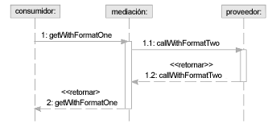

| Directriz: Mediación de servicios |
 |
|
| Elementos relacionados |
|---|
IntroducciónLa mediación es el acto de intervenir entre partes en conflicto para fomentar la reconciliación o el acuerdo mutuo. En sistemas distribuidos, en general, y en soluciones orientadas a servicios, en particular, se necesitan tres formatos comunes de reconciliación.
Es importante observar que cada vez más plataformas de middleware ofrecen funciones de mediación avanzada sin tener que desarrollar componentes de mediación explícitos. En este caso, como el middleware detecta discrepancias en la estructura de datos o en los protocolos de comunicación, puede realizar la mediación en su tiempo de ejecución. También es posible que estas plataformas proporcionen mediadores que actúen como conmutadores, según el contenido del mensaje o las reglas empresariales, para seleccionar la implementación correcta de una determinada solicitud del cliente. Mediación de datos en actividadesEn el caso de los servicios de conexión en los que la definición de mensajes no coincide o los mensajes requieren transformación entre remitente y destinatario, se puede usar una función suministrada por UML 2.0 Activities para indicar la transformación entre el remitente y el destinatario. Esta función, la asociación de un UML 2.0 Behavior con un ObjectFlow entre dos acciones, permite la identificación de un comportamiento de transformación reutilizable que puede convertir un mensaje en otro (en concreto, a partir de la especificación UML 2.0 Cambia o sustituye señales de datos que fluyen por el límite). Tal como se indicaba anteriormente,la transformación es un elemento reutilizable. Como tal, se puede identificar para transformar un tipo de mensaje en otro y, a continuación, usarse siempre que sea necesario en mensajes mediadores entre un servicio de envío y otro de recepción. Tenga en cuenta que, aunque UML no ofrece un conjunto de acciones para navegar, leer y actualizar una estructura, éstas son relativamente complejas y podrían resultar muy difíciles de usar en la definición de transformaciones. Se espera que la transformación enlace con una representación más compacta (teniendo en cuenta el lenguaje XSL/T) o con una nueva forma de expresión de las necesidades de acciones UML que se vayan a suministrar. La mediación de datos también se puede tratar como un patrón concreto de iteración de servicio. Por ejemplo, existe un servicio de mediación explícito responsable de la implementación de una o más transformaciones de datos. En este caso, el mediador debe responder a los mensajes enviados por el cliente, transformar el mensaje y transferir el servicio, tal como se muestra a continuación.  Mediación de protocolo en pasarelas de servicioPor otro lado, en el modelo también se entiende y se da soporte explícito al protocolo de mediación. Como la información de protocolo se especifica como vínculo para un canal de servicio, se pueden introducir elementos adicionales del modelo de <<Servicio>> o de <<Pasarela de servicio>> que alteren la especificación de protocolo. Por ejemplo, en el siguiente diagrama de estructura compuesta verá dos particiones, una para servicios presentados en Web y otra para servicios internos. También existe un canal de servicio entre las particiones con un vínculo de "HTTP-SOAP", algo común para servicios presentados en Web.
El problema es que, para dar soporte al nivel necesario de rendimiento y a otros requisitos no funcionales, toda comunicación dentro de la partición interna tiene lugar a través de protocolos específicos de plataforma. El siguiente diagrama muestra cómo se conecta un servicio a la pasarela de servicio "Port : ISvcTwo" mediante el protocolo RMI de Java, pero ¿qué ocurre cuando la partición web se conecta a la misma pasarela usando HTTP-SOAP?
La respuesta es que la propia pasarela de servicio puede actuar de mediadora del protocolo convirtiendo las estructuras de mensaje y las invocaciones de un formato a otro. Se trata de las funciones comunes normalmente suministras por middleware como Object Request Brokers (ORB) Message Brokers. De hecho, si fuera necesario se podría generar a partir del modelo anterior a dicho middleware, o reificar "Port : ISvcTwo" como un servicio por derecho propio que realiza llamadas desde la partición web y las reenvía a los servicios adjuntos. De nuevo, la mediación se puede modelar explícitamente como servicio, en lugar de como pasarela de servicio, que exponga la interfaz correcta con el vínculo del cliente y delegue la implementación al servicio del proveedor con un vínculo diferente. Mediación de invocación mediante composición de servicioTal como se ha descrito en la introducción, es habitual definir una estructura en la que un servicio sea dependiente de otro a la hora de realizar alguna operación. No obstante, el servicio real al que se llamará para una solicitud específica dependerá de los detalles incluidos en la solicitud, de quién sea el solicitante y de las reglas empresariales aplicadas con esta información. El ejemplo que normalmente se ofrece para esto es una solicitud de cliente, el servicio de recepción puede elegir una de las dos implementaciones según el nivel del cliente. Por ejemplo, aquellos clientes de los que se sepa que gastan más dinero, podrían obtener un trato preferencial.
Tal como se describió anteriormente, es importante en este tipo de mediación intentar externalizar las reglas usadas para seleccionar entre uno o más proveedores de la implementación de operación real. En el diagrama anterior, esto se muestra como un componente de regla adjunto al servicio de mediación. Obviamente se puede crear la solución como un conjunto de servicios en los que el mediador, las reglas y todos los implementadores sean servicios independientes. A continuación verá un ejemplo de esto.
Como se puede observar, el componente de mediación no sólo posee su especificación de servicio desarrollada sino también una especificación de servicio que todos los servicios por los que media deben implementar. Esto nos permite definir la estructura compuesta del servicio (mostrada anteriormente) y el comportamiento dinámico mostrado a continuación. Observe que en la estructura anterior, la parte que representa los servicios mediados se indica mediante la interfaz necesaria y aparece con una multiplicidad ilimitada.
De nuevo, es posible que este tipo de direccionamiento de mensajes basado en reglas o en contenido sea realizado por la plataforma de middleware seleccionada como parte de la arquitectura de la solución. |

© Copyright IBM Corp. 1987, 2006. Reservados todos los derechos. |